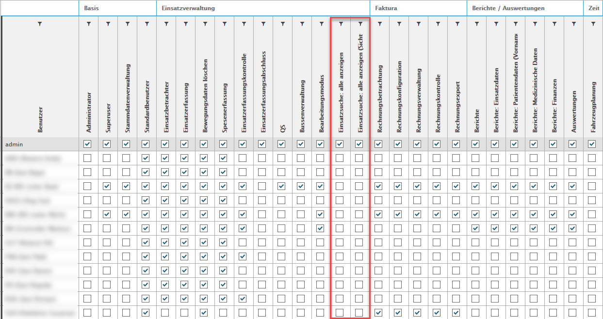
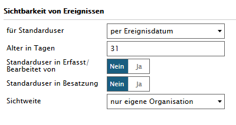
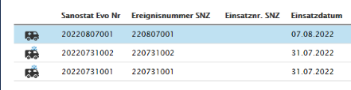
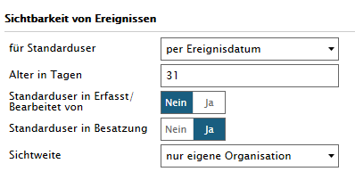
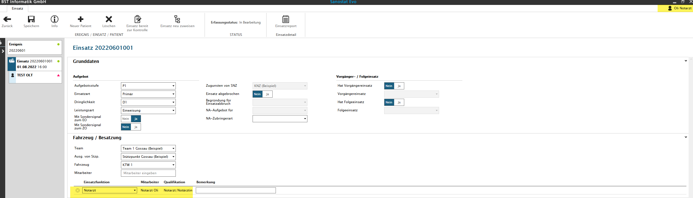
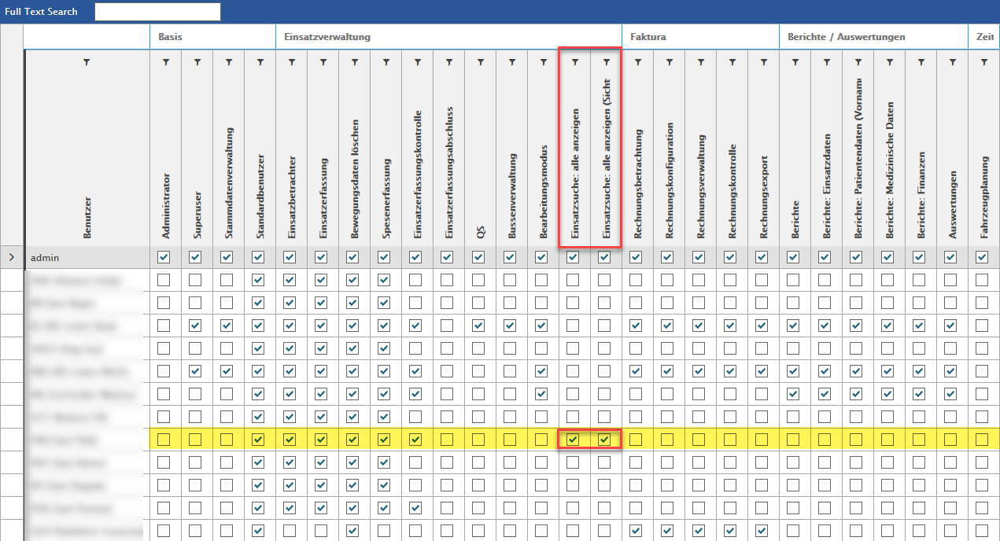
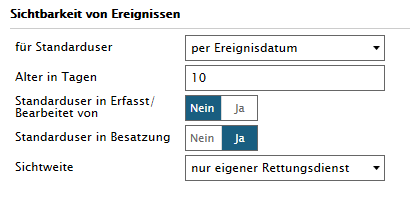

Systemeinstellungen - Sichtbarkeit von Ereignissen
Sichtbarkeit von Ereignissen
In den Systemeinstellungen können wir Ihnen als BST Admin die unterschiedlichstenn Varianten zur Sichtbarkeit von Ereignissen für Ihre MitarbeiterInnen konfigurieren.
Sichtbarkeit von Ereignissen
für den Standarduser stehen folgende Sichtweisen zur Auswahl
Nur mit Status in Bearbeitung
Per Ereignisdatum mit Festlegung der Zeitspanne
Standarduser ist im Status 'Erfasst / Bearbeitet von'
JA / NEIN
Standarduser ist in Besatzung
JA / NEIN
Sichtweise des einzelnen Users
nur eigene Organisation
nur eigener Rettungsdienst
Rollenzuordnung des Users
Damit die Einstellung in der Sichtbarkeit von Ereignissen funktioniert, dürfen die 'Einsatzsuche: alle' und 'Einsatzsuche alle: Sichtweise berücksichtigen' NICHT angekreuzt sein.

Beispiel 1 - Alter in Tagen, ohne Standarduser in Besatzung
Diesem User sollen alle Einsätze angezeigt werden, die weniger als 31 Tage alt sind.

Wird unserem Beispiel entsprechend korrekt angezeigt.

Beispiel 2 - Alter in Tagen, mit Standarduser in Besatzung
Diesem User sollen alle Einsätze angezeigt werden, die weniger als 31 Tage alt sind und er Besatzungsmitglied ist.

Das Ereignis 20220601001 ist das einzige worauf das zutrifft und dieses wird somit korrekt aufgeführt.

Beispiel 3 - User hat die Rolle 'Einsatzsuche: alle anzeigen' und 'Einsatzsuche: alle anzeigen (Sichtweise berücksichtigen)'
Hat der User die im Titel von Beispiel 3 beschriebenen Rollen...

...ist seine Sichtweise in keiner Weise eingeschränkt.
